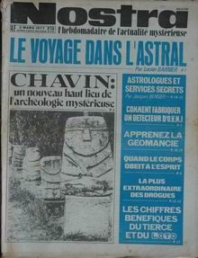
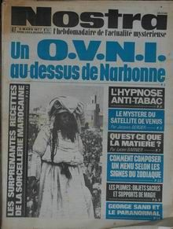
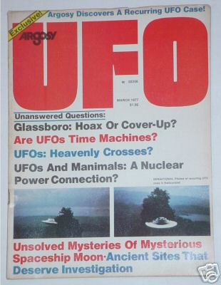

Nostra n° 256 du 2 titrant "Comment fabriquer un détecteur d'ovni"

Dans la région de Chaumont, lors d'une mission d'exercice
bombardement et navigation de nuit, rencontre du colonel René Giraud et de son
navigateur.
Nostra n° 257 du 9 titrant "Un ovni au-dessus de Narbonne"

Près de Pen-Y-Cwm, Pembrokeshire, Wales (UK), Stephen Taylor (17 ans), rentre à pieds chez lui d'une visite chez sa petite
amie, lorsqu'il voit dans le ciel un objet lumineux orange en forme de poire. Il se rend à la maison d'un ami pour
lui en parler mais n'est pas cru. 0.5mile environ plus loin, il remarque qu'il ne peut voir les lumières des fermes à sa droite ; en regardant de plus
près, il voit qu'elles ont été masquées par un grand objet en forme de dôme, d'apparence sombre, d'environ 30pieds à 40pieds de diamètre et 40pieds de haut, reposant dans le champ adjacent. Autour de sa face inférieure se trouve une lueur de lumière terne.
Alors qu'il regarde il entend des pas ; regardant autour de lui il voit à quelques pieds de distance seulement comme
un humain maigre, de 6pieds de haut, avec de hautes pommettes, comme un vieil homme, et de grand yeux ronds, ressemblant à
ceux d'un poisson. Au-dessus de sa bouche se trouve une boîte semblable à un appareil avec un tube partant
par-dessus l'épaule. Il porte une combinaison d'une seule pièce semi-transparente. Taylor tourne les talons devant
l'être et court chez lui. En arrivant, il trouve son chien agit de manière bizarre, grondant et aboyant ; mis
dehors, le chien se comporte normalement le jour suivant Humcat 1977-13 < Randall Jones Pugh pour le BUFORA.
Couverture de Argosy UFO vol. 2 n° 2 ce mois-là

, , à partir de 20:30 A Belleville-sur-Saoûne (Saône-et-Loire),
plusieurs personnes dont des gendarmes observent dans le ciel une lueur se déplaçant lentement et semblant par
moments grossir ou diminuer. La couleur peut varier du blanc au jaune orangé. La lueur disparaît .
L'hypothèse d'une observation astronomique n'a pu être confirmée par manque d'informations GEPAN : PAN
classé C.
{kind=link}